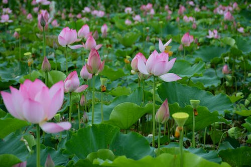

LOTUS
Nelumbo nucifera, also known as Sacred lotus, Indian lotus,[1] or simply lotus, is one of two extant species of aquatic plant in the family Nelumbonaceae. It is sometimes colloquially called a water lily, though this more often refers to members of the family Nymphaeaceae.
Lotus plants are adapted to grow in the flood plains of slow-moving rivers and delta areas.
Stands of lotus drop hundreds of thousands of seeds every year to the bottom of the pond. While some sprout immediately, and most are eaten by wildlife, the remaining seeds can remain dormant for an extensive period of time as the pond silts in and dries out. During flood conditions, sediments containing these seeds are broken open, and the dormant seeds rehydrate and begin a new lotus colony.
Under favorable circumstances, the seeds of this aquatic perennial may remain viable for many years, with the oldest recorded lotus germination being from seeds 1,300 years old recovered from a dry lakebed in northeastern China.[3] Therefore, the Chinese regard the plant as a symbol of longevity.
The flowers are usually found on thick stems rising several centimeters above the leaves.
They are showy and grow up to 30 cm (12 in) in diameter,[13] but fourteen inches (35 centimeters) has been frequently reported.
Some cultivated varieties have extraordinary numbers of petals. For example, the Chinese variety qian ban lian ("thousand petals lotus") can have between 3000 and 4000 petals in a single blossom and the Japanese variety ohmi myoren ("strange lotus") can have between 2000 and 5000 petals, the greatest number recorded for any species of plan

The national flower of a country should tie in with the culture, history and heritage of a nation.
It is meant to reinforce the country’s image to the world and play a part in upholding the qualities that the nation holds true.
The national flower of India is Lotus. It is an aquatic herb that is often termed as ‘Padma’ in Sanskrit and enjoys a sacred status among the Indian culture.
It has been an integral part of the Indian culture from time immemorial. A prominent feature of the Indian mythology, the lotus is one with
the Indian identity and represents the core values of Indian psyche.